點各章標題旁的 ▶ 按鈕可直接跳到影片對應位置。本講義以黑板顏色標示三種算法：粉紅＝傾角變位法、藍＝圖解單位位移法、棕＝直接勁度法。
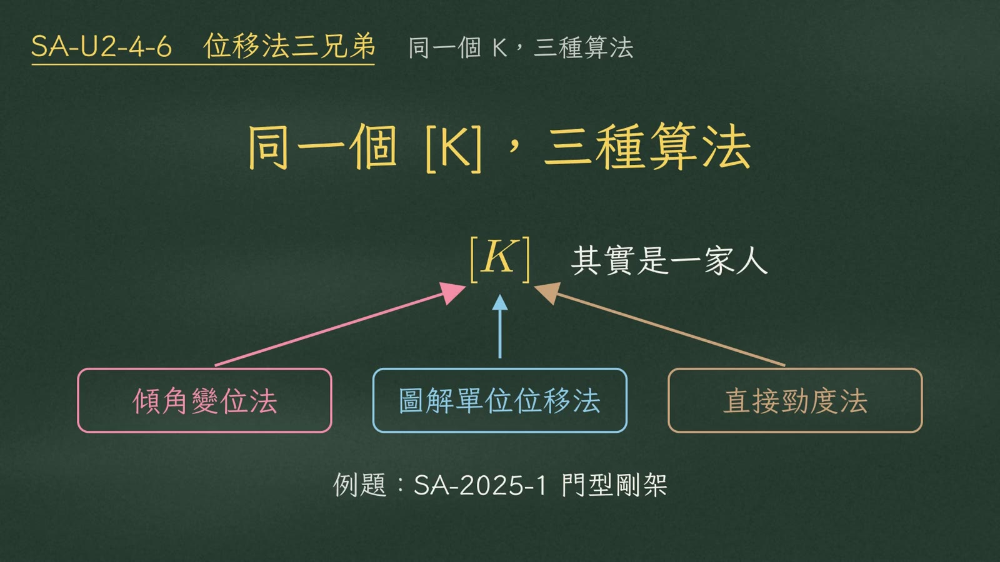
同一個門型剛架、同一個 3×3 勁度矩陣，教科書上卻有三種算法：傾角變位法、圖解單位位移法、直接勁度法。很多人以為它們是三套不同的理論，其實它們是一家人。這支影片就用 SA-2025-1，把三種算法並排算一次。
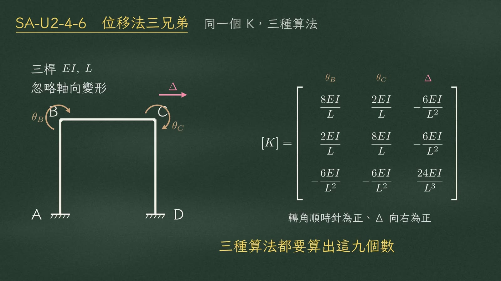
題目是單跨門型剛架，柱底固定，三根桿件都是 \(EI\)、\(L\)，忽略軸向變形。自由度剩三個：\(\theta_B\)、\(\theta_C\)、\(\Delta\)。勁度矩陣的答案是：
$$[K]=\begin{bmatrix}\dfrac{8EI}{L} & \dfrac{2EI}{L} & -\dfrac{6EI}{L^2}\\[8pt] \dfrac{2EI}{L} & \dfrac{8EI}{L} & -\dfrac{6EI}{L^2}\\[8pt] -\dfrac{6EI}{L^2} & -\dfrac{6EI}{L^2} & \dfrac{24EI}{L^3}\end{bmatrix}\qquad(\text{轉角順時針為正、}\Delta\text{ 向右為正})$$等一下三種算法，都要算出這九個數。
三兄弟用的是同一組桿件數字。兩端固定的桿件：
| 變形 | 近端 | 遠端 | 剪力 |
|---|---|---|---|
| 一端轉動 1 | \(4EI/L\) | \(2EI/L\)（傳一半） | — |
| 兩端錯開 1 | \(6EI/L^2\) | \(6EI/L^2\) | \(12EI/L^3\) |
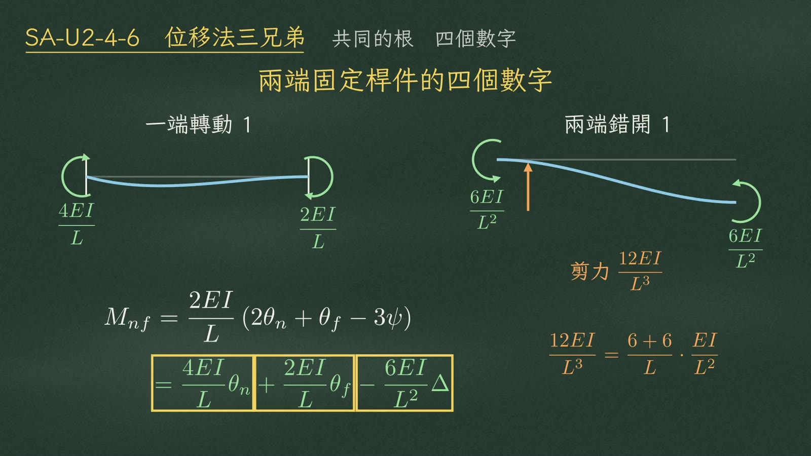
這四個數字，其實就藏在傾角變位公式裡：
$$M_{nf}=\frac{2EI}{L}\left(2\theta_n+\theta_f-3\psi\right)=\boxed{\frac{4EI}{L}\theta_n}+\boxed{\frac{2EI}{L}\theta_f}-\boxed{\frac{6EI}{L^2}\Delta}$$展開來，4、2、6 都在；12，則是兩端各 6 的彎矩加起來、再除以 \(L\) 得到的剪力：
$$\frac{12EI}{L^3}=\frac{6+6}{L}\cdot\frac{EI}{L^2}$$第一種，傾角變位法。先把每個桿端彎矩，寫成三個未知數的函數：
$$\text{左柱 B 端：}\;M_{BA}=\frac{EI}{L}\left(4\theta_B-6\frac{\Delta}{L}\right)\qquad \text{梁 B 端：}\;M_{BC}=\frac{EI}{L}\left(4\theta_B+2\theta_C\right)$$接著列平衡。B 點彎矩平衡 \(\Sigma M_B=0\)：\(M_{BA}+M_{BC}=0\)。把兩個式子加起來：
$$\frac{EI}{L}\left(8\theta_B+2\theta_C-6\frac{\Delta}{L}\right)=0$$\(\theta_B\) 的係數是 4＋4＝8，\(\theta_C\) 是 2，\(\Delta\) 是 −6。這一條方程式，正好就是勁度矩陣的第一列。
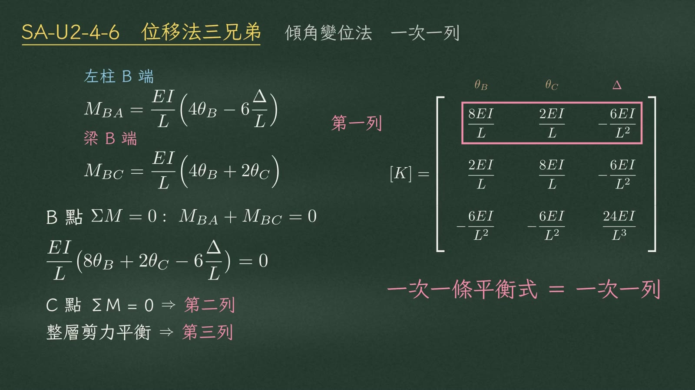
C 點彎矩平衡給第二列：2、8、−6；整層剪力平衡給第三列：−6、−6、24。
第二種，圖解單位位移法，方向剛好反過來：一次只讓一個自由度等於 1，其他全部鎖住。
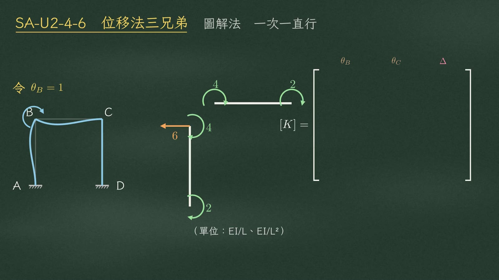
令 \(\theta_B=1\)：左柱頂要 4、柱底傳過去 2，剪力向左 6；梁左端 4，傳到 C 端 2。
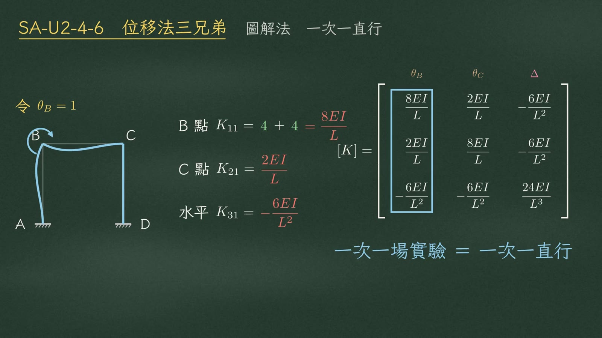
回到節點收集：
$$\text{B 點 } K_{11}=4+4=\frac{8EI}{L},\qquad \text{C 點 } K_{21}=\frac{2EI}{L},\qquad \text{水平 } K_{31}=-\frac{6EI}{L^2}$$這三個數由上往下排，就是勁度矩陣的第一直行。三場實驗做完，三個直行並排，矩陣就完成了。
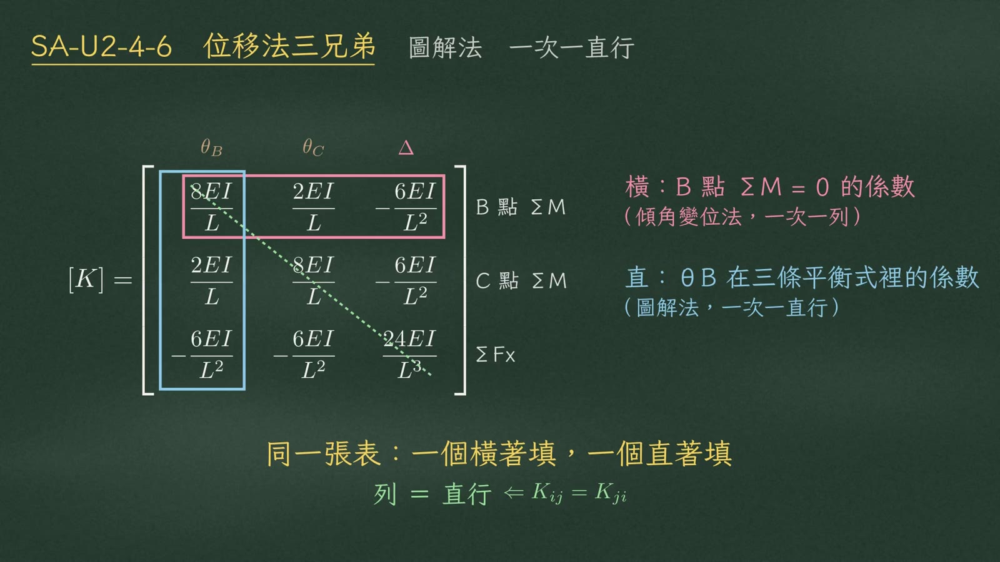
圖解法的第一直行，三個數分別是 \(\theta_B\) 出現在 B 點、C 點、水平這三條平衡方程式裡的係數。所以兩種方法填的是同一張表：傾角變位法橫著填，圖解法直著填。
直行和列的數字剛好一樣，是因為勁度矩陣對稱：
$$\text{列}=\text{直行}\;\Longleftarrow\;K_{ij}=K_{ji}$$第三種，直接勁度法。這次不跑方程式，也不跑自由度，改跑桿件：每根桿件先寫出自己的小勁度矩陣，再把它直接加進整體矩陣的對應格子。
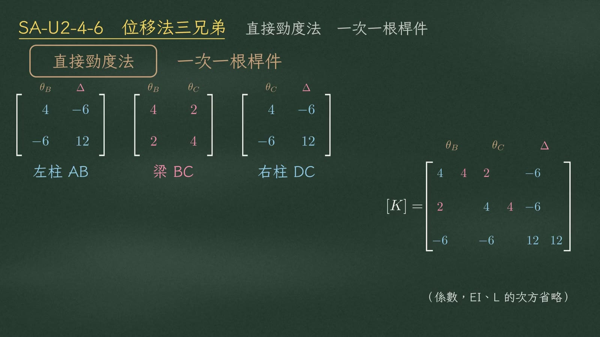
左柱只連到 \(\theta_B\) 和 \(\Delta\)，它的 2×2 矩陣 4、−6、−6、12，就加進第一和第三的行列。右柱加進第二和第三。梁連到兩個轉角，4、2、2、4，加進第一和第二。（黑板上只寫係數，\(EI\)、\(L\) 的次方省略。）
$$\underbrace{\begin{bmatrix}4&-6\\-6&12\end{bmatrix}}_{\text{左柱 AB}:\ (\theta_B,\Delta)}\qquad \underbrace{\begin{bmatrix}4&2\\2&4\end{bmatrix}}_{\text{梁 BC}:\ (\theta_B,\theta_C)}\qquad \underbrace{\begin{bmatrix}4&-6\\-6&12\end{bmatrix}}_{\text{右柱 DC}:\ (\theta_C,\Delta)}$$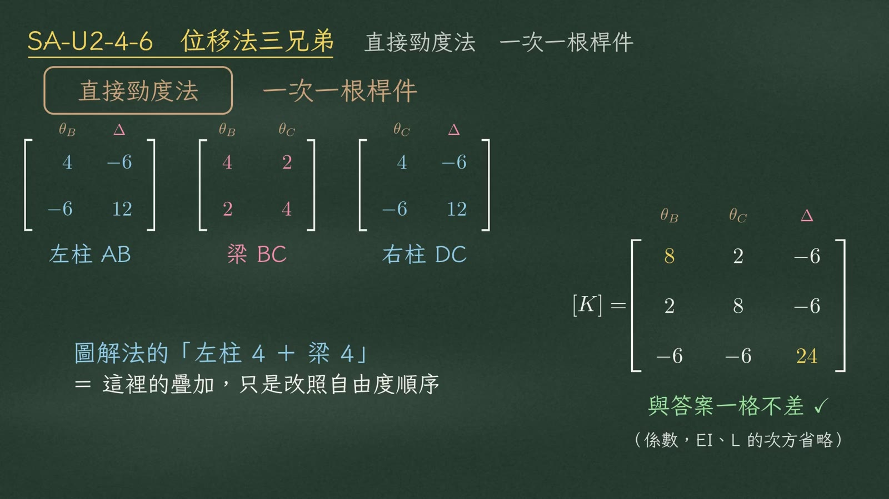
三張小矩陣疊起來：左上角 4＋4 得 8，右下角 12＋12 得 24，一格不差。
$$[K]=\begin{bmatrix}8&2&-6\\2&8&-6\\-6&-6&24\end{bmatrix}\quad(\text{係數；}EI\text{、}L\text{ 的次方省略})$$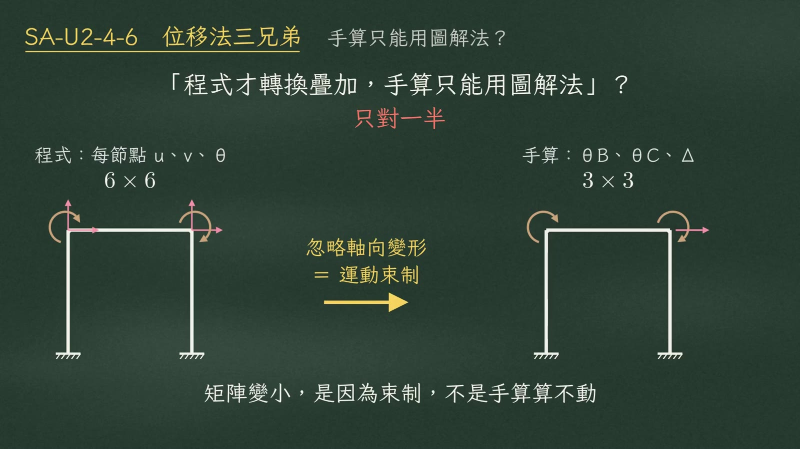
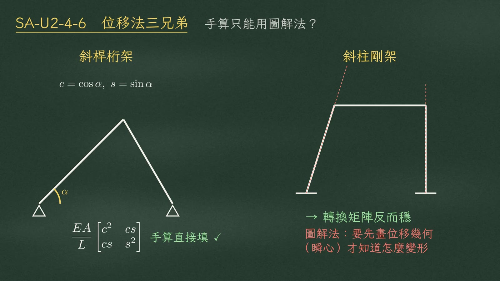
反過來，座標轉換也能手算。斜桿桁架的考題，算出每根桿的餘弦和正弦，就能直接把數字填進矩陣：
$$c=\cos\alpha,\quad s=\sin\alpha,\qquad \frac{EA}{L}\begin{bmatrix}c^2 & cs\\ cs & s^2\end{bmatrix}$$而遇到斜柱剛架，圖解法要先畫出位移幾何，才知道每根桿怎麼變形，這時轉換矩陣反而比較不容易出錯。
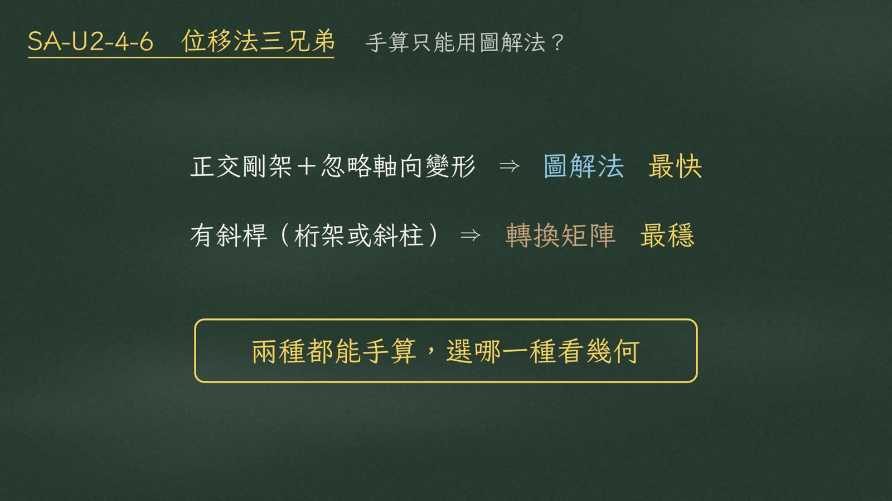
| 結構 | 建議算法 |
|---|---|
| 正交剛架＋忽略軸向變形 | 圖解法 最快 |
| 有斜桿（桁架或斜柱） | 轉換矩陣 最穩 |
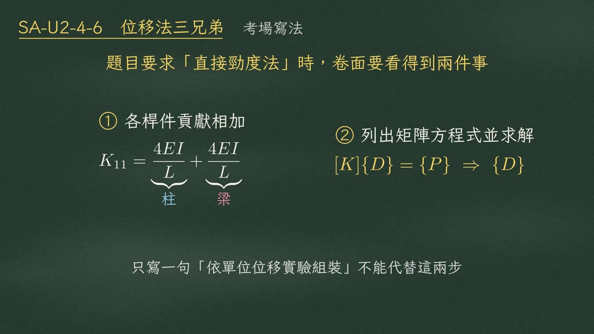
題目要求直接勁度法時，圖解法可以用，但卷面要讓閱卷老師看得到兩件事：
① 每個係數寫成各桿件貢獻相加，例如：
$$K_{11}=\underbrace{\frac{4EI}{L}}_{\text{柱}}+\underbrace{\frac{4EI}{L}}_{\text{梁}}$$② 一定要列出矩陣方程式，用它解出位移：
$$[K]\{D\}=\{P\}\;\Rightarrow\;\{D\}$$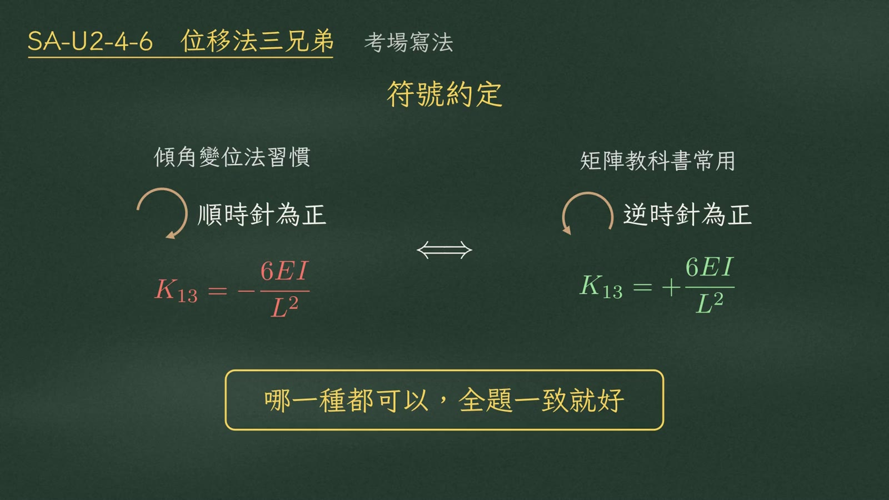
另外注意符號約定。傾角變位法習慣順時針為正，矩陣教科書常用逆時針為正，兩者的耦合項正負號會整個反過來：
| 約定 | 常見於 | 本題 \(K_{13}\) |
|---|---|---|
| 順時針為正 | 傾角變位法 | \(-6EI/L^2\) |
| 逆時針為正 | 矩陣教科書 | \(+6EI/L^2\) |
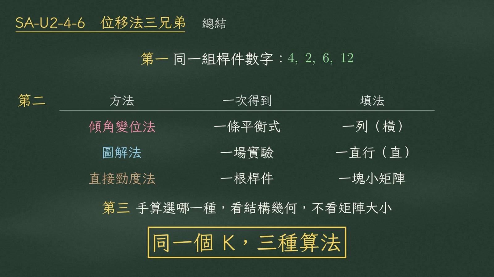
第一，三兄弟用同一組桿件數字：4、2、6、12。
第二，傾角變位法一次一列，圖解法一次一直行，直接勁度法一次一根桿件，填的都是同一張勁度矩陣：
| 方法 | 一次得到 | 填法 |
|---|---|---|
| 傾角變位法 | 一條平衡式 | 一列（橫） |
| 圖解法 | 一場實驗 | 一直行（直） |
| 直接勁度法 | 一根桿件 | 一塊小矩陣 |
第三，手算選哪一種，看結構幾何，不看矩陣大小。
來源：解題過程影片/SA-U2-4-6 位移法三兄弟/video/ 之 SA-U2-4-6.mp4（6:28）、segments.py（旁白講稿）、SA-U2-4-6.srt（字幕時間軸）。黑板截圖取自各段結束前 0.5 秒。勁度矩陣數值已依傾角變位公式複算，與影片一致。